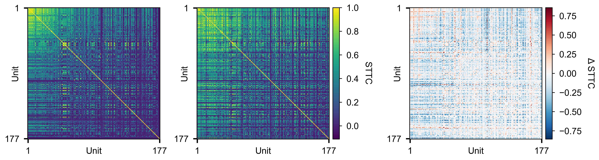
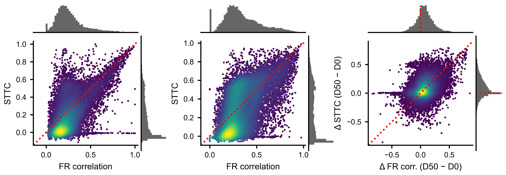
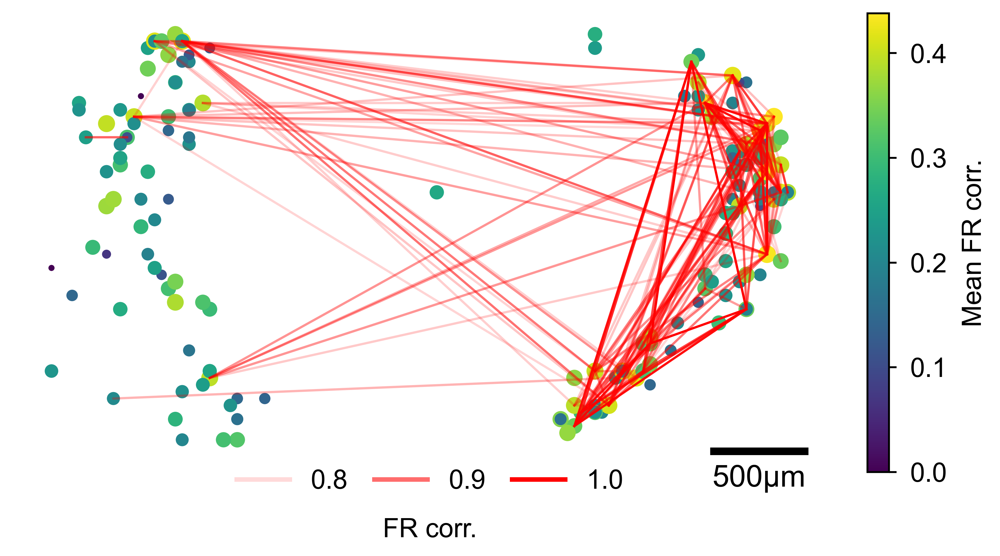

Pairwise Analysis
This guide covers computing pairwise similarity between neurons, visualizing the relationship between firing-rate correlation and spike timing, and building spatial network representations of functional connectivity on the MEA layout.
After working through this guide you will know how to:
Compute spike time tiling coefficient (STTC) matrices with
spike_time_tilings().Compare firing-rate correlation and STTC with scatter plots using marginal histograms.
Convert a
PairwiseCompMatrixto a NetworkX graph and run Louvain community detection.Plot functional connectivity as a spatial network on MEA electrode positions.
Spike Time Tiling Coefficient (STTC)
The STTC quantifies the temporal co-occurrence of spikes between two neurons. It ranges from -1 (anti-correlated) to +1 (perfectly coincident) and is unbiased with respect to firing rate, making it preferable to raw cross-correlation for comparing pairs with different activity levels.
The delt parameter sets the coincidence window in milliseconds. A spike
in neuron A is considered coincident with neuron B if any spike of B falls
within delt ms. Typical values range from 5 to 50 ms; 20 ms is a common
default for cortical data.
from spikelab import SpikeData, PairwiseCompMatrix
# sd is a SpikeData with N units
# delt: coincidence window in ms (default 20 ms)
sttc_matrix = sd.spike_time_tilings(delt=20.0)
# sttc_matrix is a PairwiseCompMatrix with shape (N, N)
print(sttc_matrix.matrix.shape) # (N, N)
print(sttc_matrix.metadata) # {'delt': 20.0}
The returned PairwiseCompMatrix stores the symmetric
N-by-N matrix together with optional labels and metadata. When numba is
installed and the number of units exceeds two, the computation is
automatically parallelized across all unit pairs.
To compare multiple conditions, compute one STTC matrix per recording and visualize them side by side:
import matplotlib.pyplot as plt
from spikelab.spikedata.plot_utils import plot_heatmap
fig, axes = plt.subplots(1, 2, figsize=(10, 4))
plot_heatmap(
sttc_d0.matrix,
ax=axes[0],
cmap="RdBu_r",
vmin=-1, vmax=1,
xlabel="Unit", ylabel="Unit",
colorbar_label="STTC",
)
axes[0].set_title("Baseline")
plot_heatmap(
sttc_d50.matrix,
ax=axes[1],
cmap="RdBu_r",
vmin=-1, vmax=1,
xlabel="Unit", ylabel="Unit",
colorbar_label="STTC",
)
axes[1].set_title("Treated")
{kind=link}

Pairwise STTC matrices ordered by mean firing-rate correlation, showing changes in temporal co-firing between conditions.
FR Correlation vs STTC Scatter
Firing-rate correlation and STTC capture different aspects of functional connectivity. Firing-rate correlation reflects co-modulation on slower timescales, while STTC captures millisecond-precision coincidences. Plotting one against the other reveals whether tightly synchronized pairs also share slow rate fluctuations.
Use plot_scatter_with_marginals() to
create a scatter plot with marginal histograms. The function accepts a
GridSpec slot and a parent figure, so you can embed multiple panels in a
single layout:
import numpy as np
import matplotlib.pyplot as plt
import matplotlib.gridspec as gridspec
from spikelab.spikedata.plot_utils import plot_scatter_with_marginals
# Extract upper-triangle values from each matrix
mask = np.triu(np.ones(sttc_matrix.matrix.shape, dtype=bool), k=1)
x = fr_corr_matrix.matrix[mask] # firing-rate correlation per pair
y = sttc_matrix.matrix[mask] # STTC per pair
# Remove NaN pairs
valid = np.isfinite(x) & np.isfinite(y)
x, y = x[valid], y[valid]
fig = plt.figure(figsize=(5, 5))
gs = gridspec.GridSpec(1, 1, figure=fig)
ax_scatter, ax_histx, ax_histy, sc = plot_scatter_with_marginals(
gs[0], # GridSpec slot for the sub-layout
fig,
x, y,
xlabel="FR correlation",
ylabel="STTC",
color_vals="density", # KDE-based density coloring
cmap="viridis",
marker_size=0.5,
alpha=1.0,
show_identity=True, # draw x=y reference line
show_colorbar=False,
)
{kind=link}

Each point is one unit pair. Density coloring highlights the core of the distribution. The identity line shows where the two metrics would agree perfectly.
Network Analysis
A PairwiseCompMatrix can be converted to a weighted
NetworkX graph for standard graph-theoretic analyses such as clustering
coefficient, shortest path length, and community detection.
import networkx as nx
# Convert to a NetworkX graph
# threshold: only include edges with |weight| > threshold
# invert_weights: if True, weight = 1 - value (useful for path-length metrics)
G = sttc_matrix.to_networkx(threshold=0.0, invert_weights=False)
print(f"Nodes: {G.number_of_nodes()}")
print(f"Edges: {G.number_of_edges()}")
For path-based metrics like global efficiency, use invert_weights=True so
that strongly correlated pairs correspond to short paths:
G_inv = sttc_matrix.to_networkx(threshold=0.0, invert_weights=True)
efficiency = nx.global_efficiency(G_inv)
print(f"Global efficiency: {efficiency:.3f}")
Community detection with the Louvain algorithm identifies groups of neurons
that are more densely connected to each other than to the rest of the
network. This requires the python-louvain package (pip install
python-louvain):
from community import community_louvain
# Build a graph with only positive edges (raw weights)
G_raw = sttc_matrix.to_networkx(threshold=0.0, invert_weights=False)
# Run Louvain community detection
# resolution: higher values produce more communities
partition = community_louvain.best_partition(G_raw, weight="weight", resolution=1.0)
modularity = community_louvain.modularity(partition, G_raw, weight="weight")
print(f"Modularity: {modularity:.3f}")
print(f"Number of communities: {len(set(partition.values()))}")
# partition is a dict mapping node index -> community label
community_labels = [partition[i] for i in range(G_raw.number_of_nodes())]
You can also compute per-node metrics such as weighted degree (strength), clustering coefficient, and betweenness centrality:
# Node strength (sum of edge weights per node)
strengths = np.array([d for _, d in G_raw.degree(weight="weight")])
# Weighted clustering coefficient
clustering = nx.clustering(G_raw, weight="weight")
Spatial Network Visualization
When electrode positions are available in neuron_attributes, you can
overlay the pairwise connectivity on the physical MEA layout. The
plot_spatial_network() method plots each unit at
its (x, y) position with node size proportional to its mean pairwise metric
and edges drawn between pairs that exceed a threshold.
import matplotlib.pyplot as plt
fig, ax = plt.subplots(figsize=(6, 6))
# sd must have neuron_attributes with 'x' and 'y' keys (positions in um)
sc = sd.plot_spatial_network(
ax,
sttc_matrix.matrix, # (N, N) pairwise metric
edge_threshold=0.3, # draw edges where STTC > 0.3
node_size_range=(2, 20), # min/max marker size
node_cmap="viridis", # colormap for node color (by row-mean)
edge_color="red", # color of connecting lines
edge_linewidth=0.6,
edge_alpha_range=(0.15, 1.0), # alpha scales with edge strength
scale_bar_um=500, # scale bar length in micrometers
)
fig.colorbar(sc, ax=ax, label="Mean STTC")
Alternatively, if you have positions as a separate array, call the
plot_spatial_network() method on the
matrix directly:
positions = sd.unit_locations # (N, 2) array of (x, y) in um
sc = sttc_matrix.plot_spatial_network(
ax,
positions,
edge_threshold=0.3,
node_cmap="viridis",
edge_color="red",
scale_bar_um=500,
)
You can also use the top_pct parameter instead of edge_threshold to
draw only the top percentile of edges, which is useful when the absolute
scale varies across conditions:
sc = sd.plot_spatial_network(
ax,
sttc_matrix.matrix,
top_pct=10, # draw only the top 10% of edges
)
{kind=link}

Units plotted at their MEA positions. Node size and color reflect mean pairwise connectivity; red lines connect pairs exceeding the threshold, with line opacity proportional to edge strength.